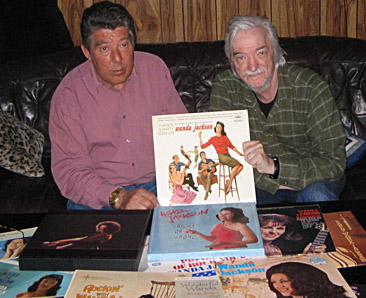

Rockehistorie:
And Then Came … WANDA!
Jeg kan ikke huske når jeg hørte Wanda Jackson første gang. Det er bare å innse det, kvinnelige artister stilte vanligvis ikke i første rekke i rockens barndom.
Et av unntakene var Connie Francis – hun var faktisk en avorlig konkurrent på platemarkedet til både Cliff Richard og Elvis Presley! Men jeg må innrømme at det er først i voksen alder at jeg helt har “oppdaget” henne, gjennom nyutgivelser av hennes mer “rocka” plateinnspillinger.
Brenda Lee gjorde absolutt inntrykk, både med “Dynamite” og “Lets Jump the Broomstick”, og det er veldig vanskelig nå å forstå hvorfor det tok meg så lang tid å bli virkelig oppmerksom på henne?
En tredje kvinnelig artist som jeg for en gangs skyld ikke møtte gjennom Radio Luxemburg, men på kino (!) var Conny Froboess. Hvorfor? Fordi hun var tysk. Filmene med henne og Peter Kraus var faktisk temmelig populære.
{kind=link}
Bilde av Wanda Jackson fra 1961. Med
autograf. Klikk på bildet for å se en
større versjon av det.
I ren nostalgi har jeg nå kjøpt det meste av henne på CD, og det er ikke dumt det hun gjør. Problemet ligger slett ikke hos henne, men en til tider helt gyselig backing… Av positive ting merker jeg meg at hun i god europeisk ånd i sin tyske versjon av “He’s Got the Whole World” legger skjebnen ikke i Guds, men i hver enkelts egne hender! “Du hast Dein Schicksal in der Hand”.
Det var likevel enda ei Connie, nemlig Connie Stevens som vinteren 1960 toppet mitt personlige platebarometer som første kvinnelige artist! Jeg ber absolutt ikke om unnskyldning for det. Jeg var (og er kanskje ennå?) ei romantisk sjel, og stemmen hennes såvel som melodier og tekster snakket et språk som den sjela forsto.
Etter det kom de faktisk brått som perler på ei snor. LaVerne Baker, Cathy Young, Rosie Hamlin, osv. Og så endelig – kom Wanda.
Dersom rocken var i ferd med å dø så var hun livredderen. Det er påfallende hvordan plateanmeldere i musikk- og ungdomsblad rundt 1960 la ned en masse tid og energi på å forsøke å drepe rock and roll. De greide det vel nesten også, godt hjulpet av den musikkindustrien som bare hadde “spilt med” i rockerevolusjonen for å tjene penger på den, men som fra første stund hadde forsøkt å ufarliggjøre og kontrollere den.
Som så mange av de beste amerikanske rockerne kom Wanda Lavonne Jackson til rock and roll via countrymusikken. Hun var ei landsens jente fra Oklahoma, født 20. oktober 1937. Hennes første plateinnspillinger var rein country, pluss noe som prøvde å være “både-og”. Men så, i 1956 sang hun inn “Honey Bop” og “Hot Dog! That Made Him Mad”. Og så var både stemmen og rytmen der den skulle være.
Men en særdeles ung mann fra Kristiansund var naturligvis helt uvitende om det. Såvidt jeg vet, hørte jeg heller aldri på det tidspunktet “Fujiyama Mama”, som ble en kjempehit for henne i Japan! Antakelig fordi de ikke forsto den egentlig temmelig tvilsomme teksten der atombombinga av Hiroshima og Nagasaki var med…?
Wanda Jackson fikk aldri topplasseringene på hitlistene, men kunne innkassere en varig solid posisjon blant dem som kjenner og forstår rock and roll.
Men ellers gjorde ikke Wanda noe inntrykk på det platekjøpende publikum. Ikke før ad merkelige omveier hennes innspilling av “Let’s Have a Party” ble gitt ut på singelplate og entret det amerikanske platebarometeret omtrent akkurat da musikkens forståsegpåere virkelig hadde begynt å tro på at rocken – endelig? – var død.
Elvis hadde jo brukt sangen i filmen “Loving You”, men dette var mye råere enn Elvis! Hun låt nærmest som en slags mellomting mellom Brenda Lee og en kvinnelig utgave av Little Richard.
Og det var da også med denne plata at jeg først stiftet bekjentskap med Wandas musikk. Det skulle bli et langt og viktig bekjentskap…
Av mine venner var det Harald Kr. Hansen som “falt” hardest for Wanda og hennes musikk. Så da vi la planer om hvilke LP-plater vi skulle kunne greie å skaffe oss ved å skrive gjesteartikler på Det Nyes musikksider fordelte vi den oppgaven greit imellom oss. Jeg skulle skrive om Billy Fury, han om Wanda Jackson!

Harald Kr. Hansen og Ingar
midt oppi samlingen med Wanda-plater.
Slik ble Harald den lykkelige eier av LP’en There’s A Party Goin’ On, men han gjorde også noe mer enn å skrive den avtalte vesle artikkelen i Det Nye. Han skrev også et brev til Wanda og fortalte at vi var to norske fans av henne som ønsket oss hvert vårt bilde med autograf. Og det kom. Ett til hver.
Og vi syntes hun var så vakker på bildet at om hun hadde befalt oss å falle død om foran hennes føtter så hadde vi sikkert gladelig adlydd!
Nåja, jeg får vel ta et lite forbehold der, men det kjentes nok slik der og da.
Wandas karriere ble kanskje ikke den hun hadde håpet på, faktisk i likhet med Billy Fury i England fikk hun aldri de topplasseringene på hitlistene som hun sikkert hadde ønsket. Men til gjengjeld kunne også hun innkassere en varig solid posisjon blant dem som kjenner og forstår rock and roll. Noe som vel må være langt, langt mer verd enn å få den sikkert veldig etterlengtede førsteplassen på amerikanske Billboard Top 100 eller Englands Top Twenty.
Utallige er de som har fått en slik topplassering, men som likevel aldri er blitt noe mer enn knapt en fotnote i rockens historiebok.
Andre enn Wanda, slike som til og med har vært mye lenger unna store hits enn henne, og som også har gjort langt færre plateinnspillinger, har til en viss grad fått oppleve noe av det samme som henne. Kvinnelige utøvere innen rocken som Janis Martin og Barbara Pittman hylles i dag med rette som viktige.
De siste åra har det kommet ut ikke mindre en to CD-bokser på Bear Family Records med Wanda Jackson, og har man dem er man ganske vel forsynt både med hennes rock og hennes country.
Men muligens som en “straff” for hennes tilknytning til rock and roll er det pussig nok ikke ofte noe av henne er med i de utallige samlingene med countrymusikk som kommer ut. Enda hun veldig naturlig ville hørt med blant de største også der.
Som så mange i samme situasjon som henne har hun med åra personlig slitt både med alkohol og kristendom. En velkjent pendling det, kanskje særlig for mange amerikanske kunstnere som har opplevd flere motbakker enn unnabakker i sin karriere. Forresten kjenner jeg da sannelig en del tilfeller av det her hjemme også.
Wanda hører med blant de største innen country. Men muligens som en “straff” for hennes tilknytning til rock and roll er det ikke ofte noe av henne er med i samlingene med country som kommer ut.
Det får bare være som det vil. Innimellom dukker hun likevel opp på konserter, til glede for gamle og nye fans.
Wanda Jacksons versjoner av mange av de store rockeklassikerne, som “Long Tall Sally”, “Hard Headed Woman”, “Twidlee Dee”, “Riot in Cell Block Number Nine” og så videre, er etter min mening helt topp rock and roll. Men jeg liker ærlig talt det meste av det hun har laget, jeg, og ballader som “Right or Wrong”, “I May Never Get to Heaven”, “Day Dreaming”, “Why I’m Walking”, osv. har til og med hjulpet meg over nedturer under skrivinga og vært med på å gi den nødvendige stemninga for å komme videre når det gjerne har sett som mørkest ut.
Det er heller ikke tvil om at Wanda var en veldig stor inspirasjon for Toini. Helt fra hun som ganske lita jente lyttet til musikken og sang med og til hun sjøl begynte både å skrive sanger og å framføre dem.
En av de første sangene hun skrev var da også “Tribute til Wanda Jackson”, og i den sangen erklærer hun henne så ganske riktig for å være…
“Queen of rock and roll!”
Wanda Jackson’s offisielle nettsted er www.wandajackson.com
Les mer om rock: